互联网上的每个网站都以独特的方式与每个浏览器进行通信。与其他浏览器相比，浏览器以单独的方式解释Web元素，并相应地呈现网站。 这意味着网站的外观不仅取决于前端开发团队，还取决于用于访问该网站的浏览器。
大型企业和创业公司都必须确保您的网站为每个访问者提供一致的用户体验。测试团队的一时粗心大意可能最终使客户的乱七八糟。这就是为什么人们不能忽视执行跨浏览器测试的原因。但，执行浏览器兼容性测试说起来容易做起来难。
是否能够确认最重要的浏览器，这些浏览器是否可以覆盖所有的用户？还是大多数？可以忽略浏览器其他版本吗？
一段时间以来，谷歌浏览器一直是全球使用最广泛的网络浏览器，但这并不意味着您可以对其竞争对手Mozilla Firefox视而不见，而Safari在不同设备上的发展趋势同样如此。Opera是非洲第二重要的浏览器，是亚洲的UC浏览器。研究和分析地理上和跨平台的各种重要Web浏览器和Web浏览器版本的市场份额，可以帮助制定应用程序的跨浏览器测试的策略。
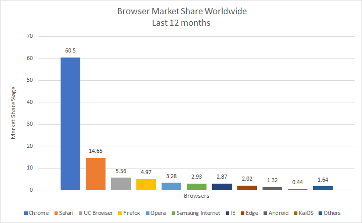
根据从Statcounter获取的数据，在过去的12个月中，谷歌浏览器无疑拥有最高的市场份额，在全球范围内约占60％。其次是Safari（约占15％），Firefox（约占6％），依此类推。因此，以与所有这些Web浏览器兼容的方式来开发您的网站是很自然的，因为它们是趋势。但是，这些数据仍然太模糊，因此有必要通过过滤一些细节来进行更深入的研究，这些细节将有助于对网站或Web应用程序的跨浏览器测试过程进行优先级划分和制定策略。
请查看以下两个统计信息：
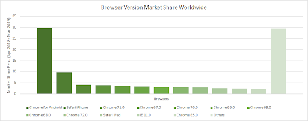
根据第一张图，我们可以得出结论，过去一年中5个最重要的浏览器是Google Chrome，UC浏览器，Firefox，Safari和IE。过去12个月Chrome和Safari的市场份额分别为59.82％和14.57％，其中，Chrome Android和Safari iPhone的市场份额分别为29.64％和9.63％。
此外，IE 11.0也占有相当的份额，可以优先考虑进行跨浏览器测试。去年，浏览器版本Chrome 69.0推出了最新的设计，并修复了许多错误，但即使它是一项重大升级，也是如此。在台式机浏览器版本中，Chrome 71和Chrome 67具有最高的市场份额。
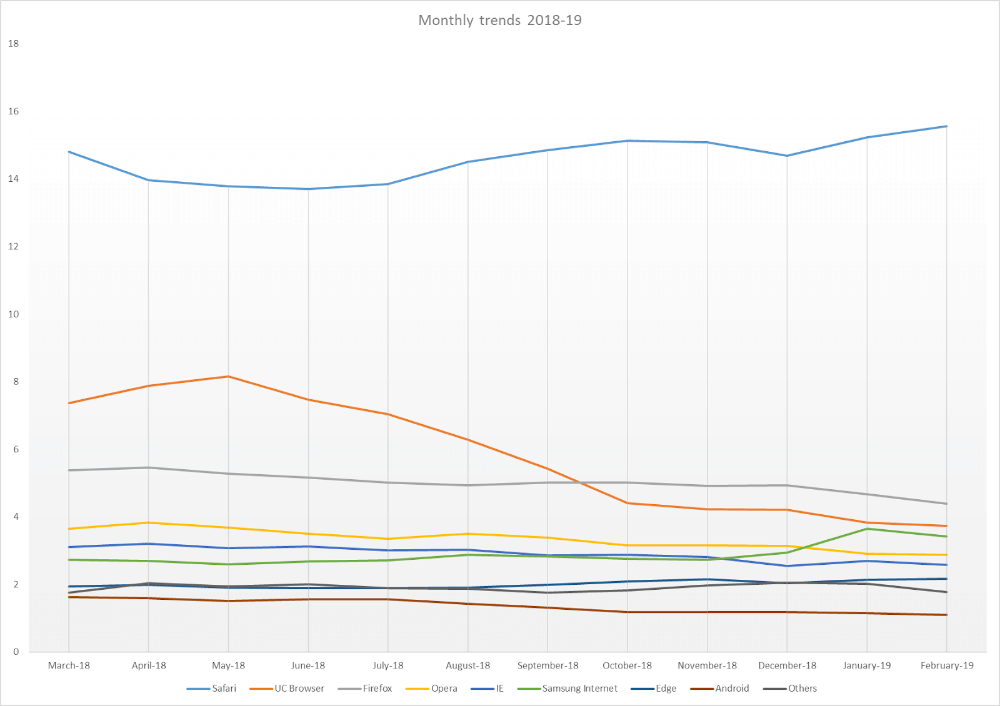
到目前为止，我们已经知道，Chrome是大多数互联网用户最喜欢的浏览器选项。但是下一个是哪个？知道第二优选的选项对于将全球受众定位到您的网站或网络应用至关重要。在不同的大洲，争夺第二名的竞争也有所不同。让我们根据不同的大陆来分析第二重要的浏览器。
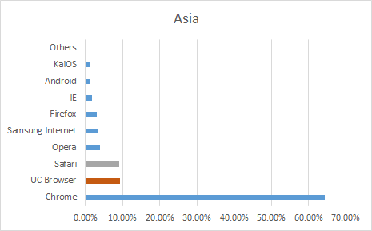
继Chrome之后，UC浏览器是亚洲大陆上最重要的浏览器。此外，可以得出的结论是，Safari也已在2019年第一季度有所增加。因此，这两个浏览器在争夺亚洲第二名的竞赛中彼此并驾齐驱。
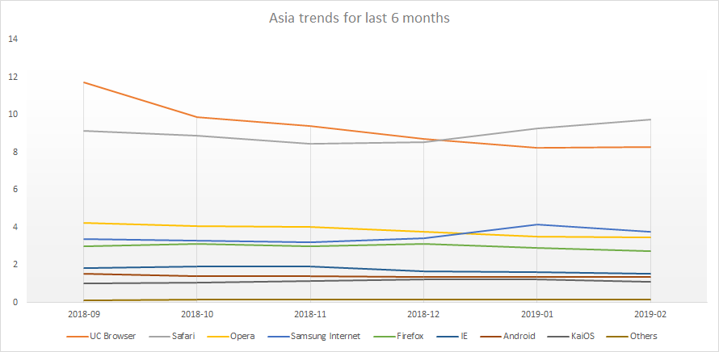
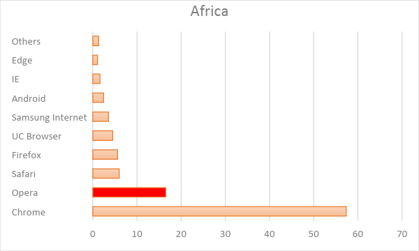
说到非洲，Opera无疑排在第二，仅次于Google Chrome。
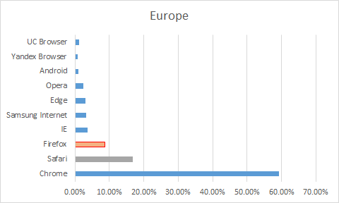
在欧洲，Safari被认为是仅次于Google Chrome的第二好的选择。尽管，Mozilla Firefox在欧洲市场上也占有相当大的份额。因此，欧洲市场最重要的3种浏览器是Google Chrome，Safari，Firefox。
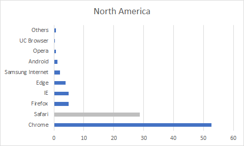
Chrome毫无疑问地统治了这个大陆。Safari远不及排名第一的位置，它是第二大选择，但仅此而已，因为Mozilla Firefox与第三选择相当接近。
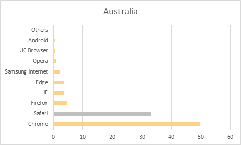
与北美地区一样，Safari的排名也超过了其他浏览器，位居第二。
我们大多数人都不会担心考虑其中的人口的大洲之一。但是，根据Wikipedia的说法，一年中大约有5,000人临时居住在科学站中。
有趣的是，Mozilla Firefox几乎已成为南极洲市场份额中的第一大优先选择。
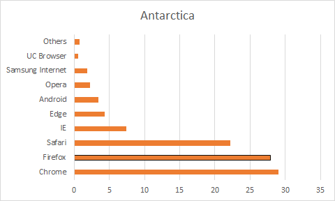
现在，我们知道了针对不同大陆的浏览器。现在，我们将根据使用的设备来研究最重要的浏览器。
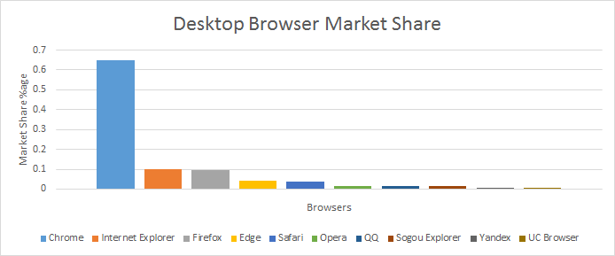
Chrome再次雄起。IE和Mozilla Firefox对我们许多人来说出乎意料地平均匹配。现在，我们知道IE被认为是古老的浏览器，您可能还知道Microsoft将不再为IE中的新Web标准提供任何支持。在Microsoft做出这样的宣布之后，我们可以预期IE的市场份额在未来一段时间将急剧下降。
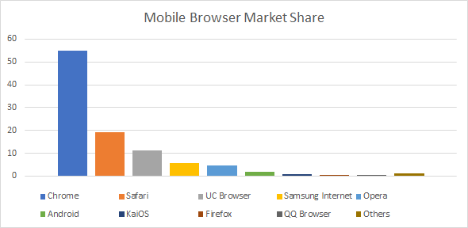
大多数用户更喜欢Google Chrome浏览器通过移动设备上网。对于我们许多人来说，令人惊讶的是，Mozilla Firefox几乎没有明显的市场份额。Safari和UC浏览器分别排名第二和第三。
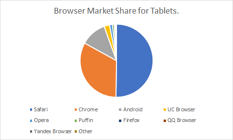
Safari胜过Chrome。如下图所示，可以得出结论，在平板电脑的情况下，Safari拥有超过一半的浏览器市场份额。主要原因是苹果公司的iPad占销量实在太好的缘故。
当我们研究Android浏览器的市场份额时，我们可以注意到最近几个月Chrome和Safari之间发生了非常巨大的转变。
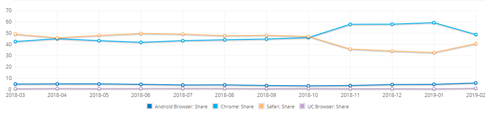
还有一些浏览器虽然不是全球知名的，但在某些国家/地区是继Google Chrome浏览器之后最重要的浏览器。我将谈论两个这样的特性。
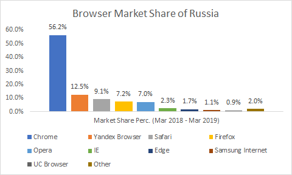
如果您要定位来自欧洲和亚洲的用户，那么俄罗斯将成为许多企业的主要考虑因素。在俄罗斯需要注意的一件有趣的事情是，在Google Chrome浏览器之后，第二重要的浏览器是Yandex。您可能没有听说过。Yandex的统计数据在全球范围内并不引人注目。但是，如果您的目标是俄罗斯，那么您就不应该错过这款浏览器。
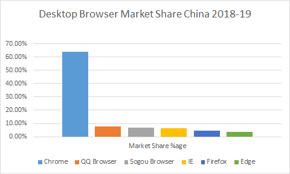
Chrome之后，中国的本机浏览器（例如QQ浏览器和搜狗浏览器）在台式机上得到了广泛使用。QQ和Sogou浏览器均基于Google Chrome。万一您没有访问这些浏览器的机会，很可能您没有，那么请不要担心！您可以在最新的5个版本的Google Chrome浏览器中测试您的Web应用程序或网站，并且可以肯定您的网站或Web应用程序在中国的跨浏览器兼容性。
跨浏览器测试可能是许多企业甚至自由职业者Web开发人员，Web测试人员的噩梦。问题是由运行在数个操作系统上的N种浏览器N个版本组合而成的。
下载机器上的每个浏览器都是一件痛苦的事情，选择虚拟机，然后安装和维护包含不同Windows，Linux和macOS的库将是耗时且具有挑战性的。